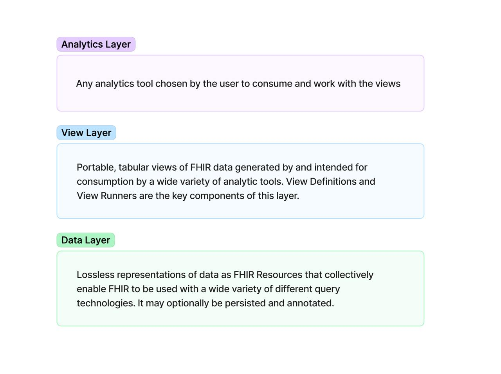
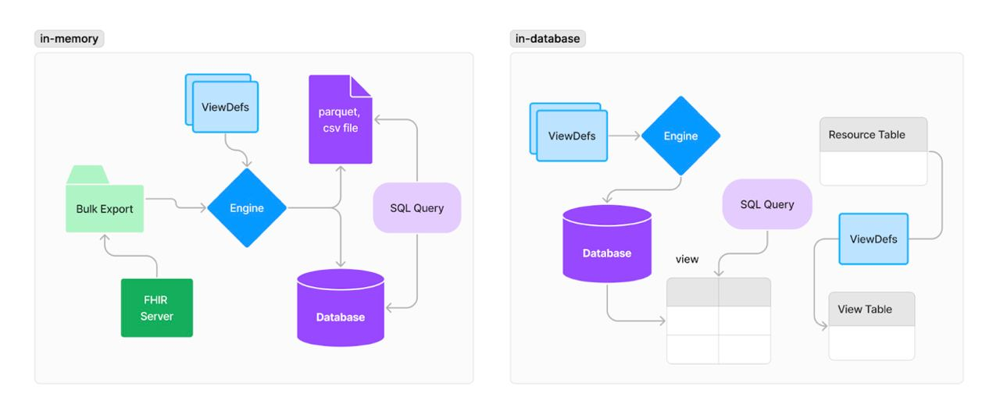

SQL on FHIR
2.0.0 - release

SQL on FHIR
2.0.0 - release

This page is part of the SQL on FHIR (v2.0.0: Release) based on FHIR (HL7® FHIR® Standard) v5.0.0. This is the current published version in its permanent home (it will always be available at this URL). For a full list of available versions, see the Directory of published versions
| Official URL: https://sql-on-fhir.org/ig/ImplementationGuide/org.sql-on-fhir.ig | Version: 2.0.0 | |||
| Draft as of 2024-10-09 | Computable Name: SQLonFHIR | |||
This is an evolution of the original "SQL on FHIR" draft, which can still be found here.
This specification proposes an approach to make large-scale analysis of FHIR data accessible to a larger audience and portable between systems. The central goal of this project is to make FHIR data work well with the best available analytic tools, regardless of the technology stack.
As the availability of FHIR data increases, there is a growing interest in using it for analytic purposes. However, to use FHIR effectively analysts require a thorough understanding of the specification, including its conventions, semantics, and data types.
FHIR is represented as a graph of resources, each of which includes nested data elements. There are semantics defined for references between resources, data types, terminology, extensions, and many other aspects of the specification.
Most analytic and machine learning use cases require the preparation of FHIR data using transformations and tabular projections from its original form. The task of authoring these transformations and projections is not trivial and there is currently no standard mechanism to support reuse.
A standard format can be provided for defining tabular, use case-specific views of FHIR data. Tools can be developed that use these views in queries capable of being executed on a wide variety of different query engines.
These views can be made available to users as an easier way to consume FHIR data which is simpler to understand and easier to process with generic analytic query tools.
FHIR implementation guides could include definitions of simple, flattened views that comprise essential data elements. The availability of these view definitions will greatly reduce the need for analysts to perform repetitive and redundant transformation tasks for common use cases.
Let's start with a simple example, defining a "patient_demographics" and "diagnoses" views with the following ViewDefinition structure:
{
"resourceType": "ViewDefinition",
"resource": "Patient",
"name": "patient_demographics",
"select": [
{
"column": [
{"name": "patient_id", "path": "getResourceKey()"},
{"name": "gender", "path": "gender"},
{"name": "dob", "path": "birthDate"}
],
{
"forEach": "name.where(use = 'official').first()",
"column": [
{"path": "given.join(' ')", "name": "given_name",},
{"path": "family", "name": "family_name"}
]
}
}
]}
| id | gender | dob | given_name | family_name |
|---|---|---|---|---|
| 5e23837b-…. | female | 1952-03-08 | Malvina Gerda | Vicario |
| 93f09189-…. | male | 1981-08-08 | Yolotzin Adel | Bristow |
| 44d86263-…. | other | 2015-01-28 | Jin Gomer | Aarens |
{
"resourceType": "ViewDefinition",
"resource": "Condition",
"name": "diagnoses_view",
"select": [
{
"column": [
{"name": "condition_id", "path": "id"},
{"name": "onset", "path": "onset.dateTime"},
{"name": "abatement", "path": "abatement.dateTime"},
{"name": "status", "path": "clinicalStatus.coding.code.first()"},
{"name": "code", "path": "code.coding.where(system='http://snomed.info/sct').code.first()"},
{"name": "display", "path": "code.text"},
{"name": "patient_id", "path": "subject.id"}
]
}
]
}
| condition_id | onset | status | code | display | patient_id |
|---|---|---|---|---|---|
| 011b6e34-… | 2016-08-06T02:13:33+03:00 | resolved | 444814009 | Viral sinusitis (disorder) | 5e23837b-…. |
| 014774ea-… | 2016-05-27T13:44:17+03:00 | resolved | 195662009 | Acute viral pharyngitis (disorder) | 93f09189-…. |
| 02116b05-… | 2003-02-14T18:25:00+03:00 | resolved | 195662009 | Acute viral pharyngitis (disorder) | 44d86263-…. |
| 0287a9bc-… | 2019-03-30T08:53:34+03:00 | resolved | 10509002 | Acute bronchitis (disorder) | 41907da4-…. |
| 02a79009-… | 2013-07-04T14:17:52+04:00 | resolved | 43878008 | Streptococcal sore throat (disorder) | 5bad6369-…. |
| 02bfc9af-… | 2016-10-06T05:24:13+03:00 | resolved | 195662009 | Acute viral pharyngitis (disorder) | 8742d4ba-…. |
Such tabular views can be created for any FHIR resource, with more examples here. See the View Definition page for the full definition of the above structure.
The views can be persisted and queried in your database of choice, using the view name as the table name:
SELECT DATE_PART('year', AGE(pt.dob::timestamp)) AS age,
gender,
dg.code,
dg.display,
count(*)
FROM patient_demographics pt
JOIN diagnoses dg using (patient_id)
GROUP BY 1,2,3,4
ORDER BY 1, 5 desc
Example output:
| age | gender | code | display countr | |
|---|---|---|---|---|
| 7 | female | 444814009 | Viral sinusitis (disorder) | 1340 |
| 7 | female | 65363002 | Otitis media | 2345 |
| 7 | female | 43878008 | Streptococcal sore throat (disorder) | 42 |
View Definitions are intentionally constrained to a narrow set of functionality to make them easily and broadly implementable, while deferring higher-level capabilities to database engines or processing pipelines that solve those problems well. Therefore it's important to know what View Definitions do not do, by design:
A single View Definition defines a tabular view of exactly one resource type,
like a view of Patient or a view of Condition resources. Any joins between
resources are exclusively in downstream systems, like between database tables
computed by view definitions. This makes it possible for a wide set of FHIR
infrastructure to implement this spec, and lets database engines or processing
pipelines join as needed.
View Definitions define only the logical schema of views, and therefore defer sorting, aggregation or limit operations to engines, along with cross-view joins. View Runners (described below) or future FHIR server operations may accept limits or sort columns as part of their operations, so users at runtime can specify what they need dynamically and independently of the definition of the view itself.
View Definitions themselves are independent of any tech stack and therefore unaware of the output format. View Runners are the component that applies definitions to a particular stack, producing output like a database table, Parquet file, CSV, or another format specific to the runner.
The View Definition is the central element of this spec, but in practice it is only one layer within a larger system. A broader view of the system includes three layers:

Figure 1: High-level diagram of layers
The Data Layer is a set of lossless representations that collectively enable FHIR to be used with a wide variety of different query technologies.
The Data Layer may optionally be persisted and annotated to make implementations of the View Layer more efficient, but no specific Data Layer structure will be required by this specification.
The View Layer defines portable, tabular views of FHIR data that can be easily consumed by a wide variety of analytic tools. The use of these tools is described in the Analytics Layer section. Our goal here is to get the required FHIR data into a form that matches user needs and common analytic patterns.
The View Layer has two key components:
See View Definition for more details and examples.
View Runners will be specific to the data layer they use. Each data layer may have one or more corresponding view runners, but a given View Definition can be run by many runners over many data layers.
There are two popular categories of runners:

Users must be able to easily leverage the above views with the analytic tools of their choice. This specification purposefully does not define what these are, but common use cases may be SQL queries by consuming applications, dataframe-based data science tools in Python or R, or integration with business intelligence tools.
See the Glossary for the definitions of terms used in this specification.
FHIR® is the registered trademark of HL7 and is used with the permission of HL7. Use of the FHIR trademark does not constitute endorsement of the contents of this repository by HL7, nor affirmation that this data is conformant to the various applicable standards.